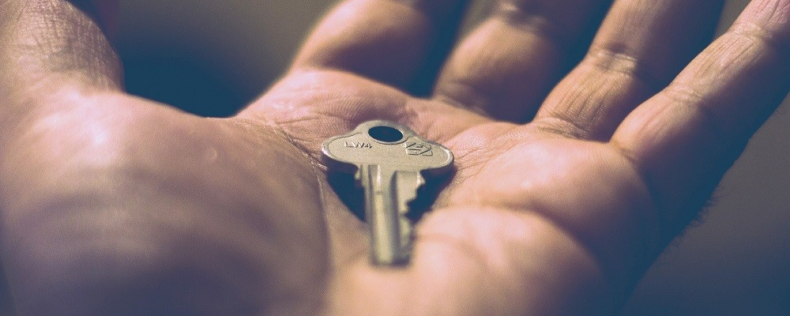
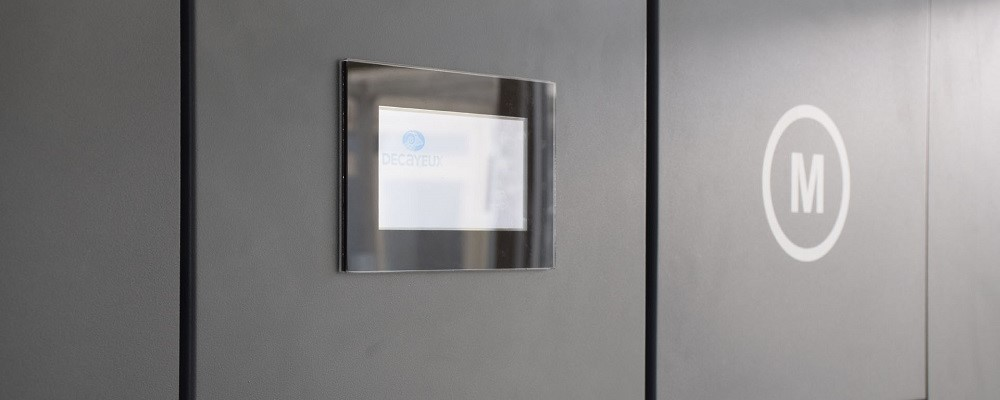
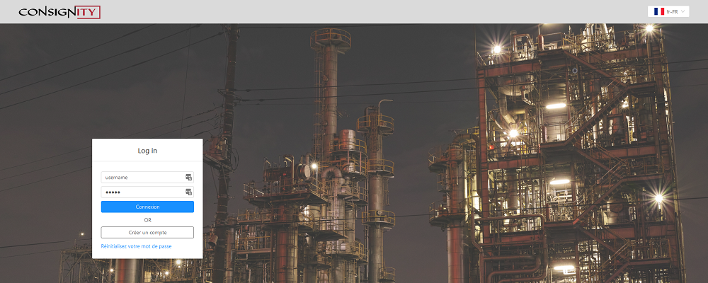
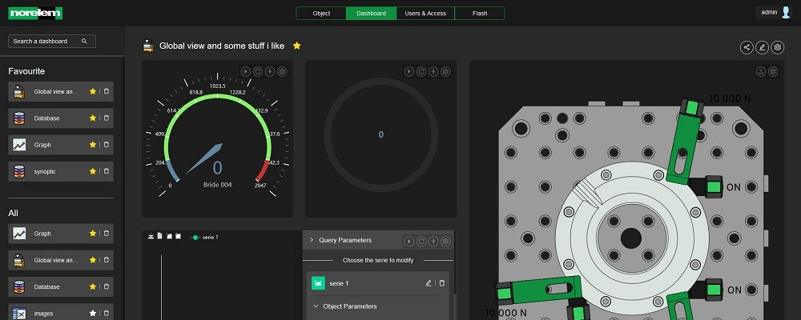

-

Vigilock
As part of the Vigilock team, I was able to perfect my projects and teams management skills by equipping the company with modern tools (Git and GitHub, Teams / Slack, Postmann, Wiki and documentations) allowing the good transmission of knowledges and the rapid appropriation of projects for newcomers.
In addition to various developments and customer follow-up (quote, support), I am also involved in the deployment of applications with Docker and Digital Ocean.
-

MySmartBox
MySmartBox allows people to be directly delivered to their residence and to be notified by SMS to remove the package with the associated code. This project, marketed by Decayeux, has been awarded several prizes, like the CES Innovation Honorees 2018.
My role on this project was to translate customer needs into features. Team and planning management did not prevent me from directly developing protocol aspects in NodeJS, as well as client-related APIs and front-end back-office with roles and permissions management.
-

Consitainer
Consitainer is a secure container to ensure delivery on the last kilometer. The customer can create on the back-office his own delivery slips which will be sent to the container by GSM. This project was deployed at GRTgaz following the selection of Consitainer at the Challenges Open Innovation 2017.
I was able to develop the front-end back-office (React), a mobile application (React-Native) to interact with a Consitainer (remote opening) while modeling the databases.
-

Norelem
The Norelem supervision offers a range of connected sensors for remote monitoring of production lines. In the midst of the boom of Industry 4.0, this solution is totally modular to adapt to the needs of supervision: historical, real-time monitoring, rights management, organization of data in dashboard or trees of connected objects ...
I intervened very early on this project with the development (in C) of firmware for transmitters and receivers to read the data on several sensors. I also offered optimizations and security frameworks for radio communications, as well as a data model (implemented with MongoDB) allowing a thorough personalization and a complete modularity of the application for new sensors to supervise in the future.